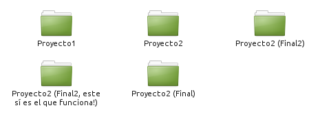
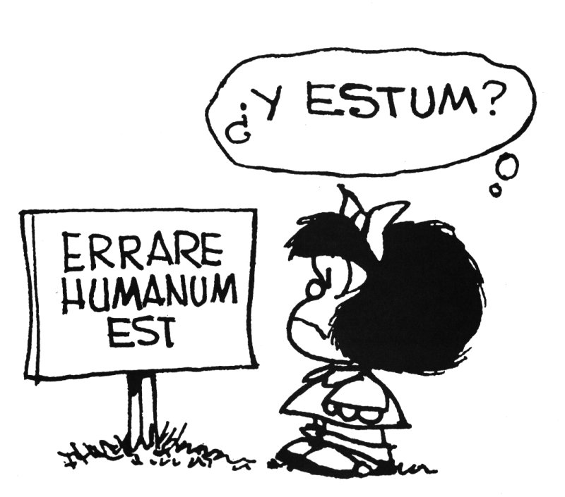

Taller de GIT
Herramientas de Programadores para NO PROGRAMADORES
Leandro E. Colombo Viña
colomboleandro@bitson.com.ar / @lecoviURL Presentación:
http://www.bitson.com.ar/flisol/git
Descarga de Archivos:
http://www.bitson.com.ar/flisol/git/archivos.tgz
¿Qué es un sistema de control de versiones?
Se ocupa de registrar los cambios en un archivo o serie de archivos a lo largo del tiempo para poder recuperar cualquier versión anterior.
Si alguna vez te pasó esto
(a mí me pasó más de una vez...)

Sería buenísimo implementar un sistema de control de versiones
Git te puede ayudar a no tener más esos problemas.
Sistema Local de Control de Versiones
"Copiar los archivos en otro directorio"

es fácil equivocarse y sobreescribir por error...
2 Modelos
Centralizado vs. Distribuido


Instantáneas, no diferencias
Git modela los datos como un conjunto de "fotos" de un mini file-system.

Características
- Casi todas las operaciones son locales.
- Mantiene la integridad por medio de cheksums.
- Generalmente sólo añade información.
Los 3 Estados
- Trabajo.
- Preparación.
- Confirmado.

entonces...
Manos a la obra

Instalando en GNU/Linux

# apt-get install git

# yum install git-core
Instalando en Windows
El proyecto msysGit tiene un proceso de instalación muy sencillo.
http://msysgit.github.com/Configurando Git
Git viene con una herramienta que se llama: git config
Sistema
/etc/gitconfig
Global
~/.gitconfig
Repositorio
.git/config
Identidad
$ git config --global user.name "Leandro E. Colombo Viña"
$ git config --global user.email colomboleandro@bitson.com.ar
Editor
$ git config --global core.editor vim
Diferencias
$ git config --global merge.tool vimdiff
Verificando tu configuración
$ git config --list
Help!
$ git help <comando>
$ git <comando> --help
$ man git-<comando>
Creando un repositorio
En un nuevo directorio iniciamos un repositorio
Abrimos una terminal y ejecutamos lo siguiente:
~ $ mkdir Manual_Programacion
~ $ cd Manual_Programacion
~/Manual_Programacion $ git init
Agregando archivos
Ya tenemos listo nuestro repositorio. Git "le presta atención" a lo que hagamos dentro de este directorio.
Colocamos los archivos que van a formar parte de nuestro repositorio en el directorio.
Y debemos decirle a Git que queremos agregar estos archivos al repositorio.
~/Manual_Programacion $ git add *
~/Manual_Programacion $ git status
~/Manual_Programacion $ git commit -m "Iniciando el repositorio"
Workflow

¿En qué estado estamos?
~/Manual_Programacion $ git status
On branch master
nothing to commit, working directory clean
Agregando más archivos
Agreguemos un simple archivo README.
Observemos cómo Git nos informa sobre el estado.
~/Manual_Programacion $ vim README
~/Manual_Programacion $ git status
On branch master
Untracked files:
(use "git add <file>..." to include in what will be committed)
README
nothing added to commit but untracked files present (use "git add" to track)
Siguiendo nuestros archivos
~/Manual_Programacion $ git add README
~/Manual_Programacion $ git status
On branch master
Changes to be committed:
(use "git reset HEAD <file>..." to unstage)
new file: README
Preparando archivos modificados
Hagamos una pequeña modificación en el archivo: manual.odt.
~/Manual_Programacion $ git status
On branch master
Changes to be committed:
(use "git reset HEAD <file>..." to unstage)
new file: README
Changes not staged for commit:
(use "git add <file>..." to update what will be committed)
(use "git checkout -- <file>..." to discard changes in working directory)
modified: manual.odt
Agregamos los cambios
Si queremos agregar todos los cambios en todos los archivos:
~/Manual_Programacion $ git add .
~/Manual_Programacion $ git status
On branch master
Changes to be committed:
(use "git reset HEAD <file>..." to unstage)
new file: README
modified: manual.odt
Registrando cambios
Entonces ahora sólo resta registrar estos últimos cambios.
~/Manual_Programacion $ git commit
Dentro del COMMIT:
Agregando archivo README y modificación de manual.
Hasta ahora iniciamos el repositorio, y después agregamos un archivo nuevo
(README), hicimos una modificación en el manual y ahora estamos fijando el
estado para que quede una versión.
Ignorando algunos archivos
Crear en el directorio raíz de nuestro repositorio el archivo: .gitignore
- Las líneas en blanco o que empiezan por
#son omitidas. - Se pueden usar patrones glob estándar.
- Se puede indicar un directorio agregando una barra (
/) al final del nombre. - Se puede negar un patrón añadiendo
!adelante del patrón.
Por Ejemplo
Creamos el archivo .gitignore y agregamos:
###########################################################################
## Acá agregamos los patrones que queremos ignorar.
##
## - Las líneas en blanco o que comienzan con '#' son ignoradas
## - Se pueden usar patrones GLOB estándar:
## - *: Un asterisco reconoce cero o más caracteres.
## - [xyz]: Cualquier conjunto de caracteres, en este caso, x o y o z.
## - ?: Un signo de interrogación reconoce un único caracter.
## - [a-d]: Caracteres entre corchetes separados por un guión reconoce
## cualquier caracter entre ellos. En este caso: a, b, c o d.
## - Se pueden indicar directorios con una barra al final. Por ejemplo:
## Temporales/
## - Se puede negar cualquier patrón agregando un signo de admiración (!)
## adelante del patrón. Por ejemplo:
## !*.c
###########################################################################
## Ignorando archivos temporales de libreoffice:
.~*
Agregando al repositorio
Ahora debemos agregar el .gitignore al repositorio:
~/Manual_Programacion $ git add .gitignore
Abrir el manual.odt y consultar el estado del repositorio:
~/Manual_Programacion $ git status
Notemos como nos aparece el archivo temporal.
Saltando 1 paso
Se puede omitir el estado de preparación (staged) utilizando la opción -a.
~/Manual_Programacion $ git commit -a -m "Agregando archivo .gitignore"
Volver a abrir el manual.odt y a consultar el estado del repositorio:
~/Manual_Programacion $ git status
Viendo los cambios
¿Cómo podemos hacer para visualizar los cambios realizados hasta el momemento?
~/Manual_Programacion $ git log
Eliminando archivos
Se deben eliminar del área de seguimiento (staged).
Se utiliza el comando git rm que lo elimina del repositorio y del directorio de trabajo.
Copiar archivos dentro del directorio de trabajo:
~/Manual_Programacion $ git add .
~/Manual_Programacion $ git commit -a -m "Agregando material"
Ahora sí, después de haber registrado los cambios, eliminamos la carpeta:
~/Manual_Programacion $ git rm -r Material/
Verificamos el estado, hay que volver a registrar los cambios:
~/Manual_Programacion $ git commit -a -m "Sacando material"
Eliminando del seguimiento
Usamos el parámetro --cached .
Copiamos archivos al directorio de trabajo y los agregamos.
~/Manual_Programacion $ git status
~/Manual_Programacion $ git add .
~/Manual_Programacion $ git status
UPS! Fue un error... entonces los borramos del seguimiento:
~/Manual_Programacion $ git rm --cached -r Material/
~/Manual_Programacion $ git status
Debemos ignorarlos:
~/Manual_Programacion $ git commit -a -m "Omitiendo Material/ (.gitignore)"
Moviendo archivos
Para mover archivos utilizaremos el comando git mv. Esto nos permitirá mover (renombrar) archivos.
Renombramos el archivo README a README.txt:
~/Manual_Programacion $ git mv README README.txt
~/Manual_Programacion $ git status
Confirmamos el cambio:
~/Manual_Programacion $ git commit -a -m "Renombrando README"
~/Manual_Programacion $ git status
Verificamos en el SO:
~/Manual_Programacion $ ls
¿Y todo esto? ¿Para qué?
Para cuando hay problemas...

Modificando el último commit
~/Manual_Programacion $ git commit --amend
- Para cambiar el texto del commit.
- Si nos olvidamos agregar algún archivo.
Modifiquemos el último commit
Hacemos un cambio en el manual.odt, lo registramos y con amend rectificamos.
~/Manual_Programacion $ git commit -a -m "Realizando cambio para deshacer"
~/Manual_Programacion $ git commit --amend
Nos abre el editor de texto para editar la descripción del COMMIT:
"Agregando subtítulo a manual.odt"
Agregamos más archivos al directorio de trabajo y rectificamos de nuevo:
~/Manual_Programacion $ git add c.jpg
~/Manual_Programacion $ git commit --amend
Deshacer modificaciones
Después de realizar un cambio, podemos volver a la versión anterior en la etapa staged.
~/Manual_Programacion $ git checkout -- <file>
Volver sobre nuestros pasos

Si fuese necesario volver a algún commit anterior porque los cambios realizados no nos convencen.
Utilizaremos el comando git reset. Para esto necesitamos saber el hash del commit, ya que así los identificaremos.
Buscando commits
Utilizando el comando git log y el comando git reflog, podremos ver a qué commit nos queremos mover.
~/Manual_Programacion $ git log --pretty=format:"%h %s"
~/Manual_Programacion $ git reflog
Pasos firmes o ...
Para hacer un cambio "suave":
~/Manual_Programacion $ git reset --soft <commit>
O un cambio "fuerte":
~/Manual_Programacion $ git reset --hard <commit>
Ramificándonos

¿Qué es una rama?

Creando una rama
Creamos una rama llamada testing.
~/Manual_Programacion $ git branch testing

¿Cómo sabe Git dónde estamos trabajando?

Saltando de Rama en Rama
Cambiamos el puntero HEAD con el comando checkout.
~/Manual_Programacion $ git checkout testing

Haciendo cambios en la nueva rama
Editemos el archivo README.
~/Manual_Programacion $ git commit -a -m "Editando README en rama TESTING."

Volviendo a Master
~/Manual_Programacion $ git checkout master

Modificando Master
Editemos el archivo README.
~/Manual_Programacion $ git commit -a -m "Editando README en rama MASTER."
Divergente
¿qué hemos hecho?

Mezclando
Para fusionar nuestrar ramas tendremos que utilizar el comando merge.
~/Manual_Programacion $ git merge testing
Si no necesitamos más la rama la podemos borrar con el parámetro -d.
~/Manual_Programacion $ git branch -d testing

Resolviendo conflictos
A veces Git no puede resolver solo la unión de las ramas y necesitará que decidamos qué hacer.
Con status nos informará qué no pudo resolver.
Editemos (resolviendo) el archivo y agreguemos a la etapa staged.
~/Manual_Programacion $ vim README.txt
~/Manual_Programacion $ git add README.txt
Terminemos la fusión con commit.
~/Manual_Programacion $ git commit
Publicando nuestro trabajo
Existen múltiples servicios para alojar nuestros repositorios en la nube:
- Google Code
- GitHub
- Bitbucket
- Si ya tenés una cuenta de Google, ya tenés!
- Gratis.
- Soporte para Git, Mercurial y Subversion.
- Repositorios públicos.
- Open Source Projects.
- Cuota de 4 GiB.

- Repositorios públicos Gratis y privados Pagos.
- Soporte para Git.
- Sin Cuota.
- Comunidad más grande en Open Source Projects.
- Página para tu proyecto & Entrenamiento.
- Soporte para Organizaciones.
- Cliente para Windows & Mac.

- Repositorios públicos y privados Gratis.
- Soporte para Git o Mercurial.
- Sin Cuota.
- Página para tu proyecto & Tutoriales.
- Gratis hasta 5/8 usuarios.
- Cliente para Windows & Mac.
Creando un repositorio en Bitbucket
- Crear cuenta en https://bitbucket.org/account/signin/
- Crear un repositorio, presionando sobre el botón Crear.
- Completar el formulario. Terminamos con el botón Crear Repositorio.
https://bitbucket.org/<username>/<repositorio>
Subiendo el repositorio
~/Manual_Programacion $ git remote add <nombre> https://<username>@bitbucket.org/<username>/<repositorio>.git
Si le ponemos el nombre bb, mi nombre de usuario colomboleandro y el repositorio prueba1:
~/Manual_Programacion $ git remote add bb https://colomboleandro@bitbucket.org/colomboleandro/prueba1.git
~/Manual_Programacion $ git push -u bb --all
Password for 'https://colomboleandro@bitbucket.org':
Counting objects: ....
....
Branch master set up to track remote branch master from bb.
Actualizando nuestro repositorio
Continuando con el flujo de trabajo, después deberemos actualizar nuestro repositorio remoto.
Agreguemos algún archivo a nuestro directorio de trabajo:
~/Manual_Programacion $ git add .
~/Manual_Programacion $ git status
~/Manual_Programacion $ git commit -a -m "Agregando más archivos"
Realicemos alguna modificación:
~/Manual_Programacion $ git status
~/Manual_Programacion $ git commit -a -m "Modificando archivos"
~/Manual_Programacion $ git status
Publiquemos ambos cambios:
~/Manual_Programacion $ git push bb
Repositorio Taller de Git en Bitbucket
https://bitbucket.org/colomboleandro/tallergit
Presentación
Archivos
Comprimidos en un tar.gz
Descargar: http://www.bitson.com.ar/flisol/git/archivos.tgz
Para descomprimir: tar xfz archivos.tgz
Más info
- Libro git en Español: http://git-scm.com/book/es
- Google Code:
- GitHub:
- Bitbucket: